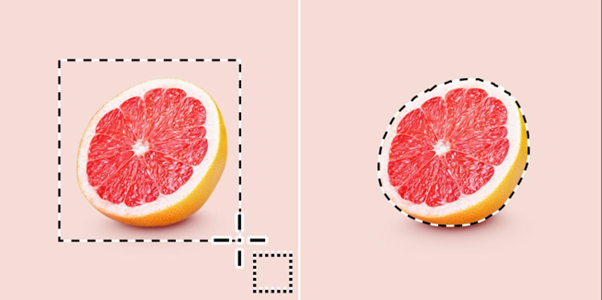

تُعدّ Crop Tool من أبسط وأقوى الأدوات في فوتوشوب. وظيفتها الأساسية هي قص أجزاء من الصورة أو تغيير مقاساتها بدقة متناهية، مما يجعلها الخيار الأول عند ضبط التكوين البصري.

Picture1.png — Crop Tool
1
حدد أداة القص من شريط الأدوات على يسار الشاشة أو اضغط على المفتاح C
2
اسحب إطار القص فوق المنطقة التي تريد الإبقاء عليها في الصورة
3
اضغط Enter لتأكيد القص وحذف الأجزاء خارج الإطار